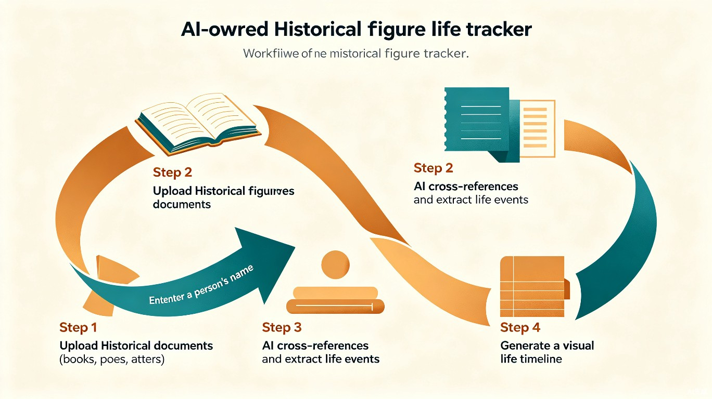
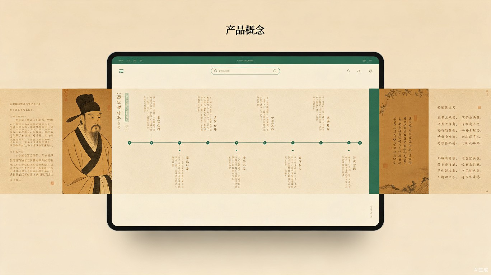

01 创意介绍
创意名称
史海寻踪（Life Tracker in Historical Archives）
要解决什么问题
中国拥有数千年绵延不绝的文献传统，正史、野史、地方志、诗集、书信集……其中蕴含着无数鲜活的历史人物。 然而这些资料分散在浩如烟海的不同典籍中，想要完整追踪一个人的一生，往往需要耗费学者数年乃至数十年的功夫。 普通读者、学生、历史爱好者面对庞杂的古文资料，几乎无从下手。
灵感来源
读苏轼的诗词时，我们会好奇他写下「大江东去」时身处何方；读李清照的词时，我们会想知道靖康之变后她的流亡路线； 读一封家书时，我们会想追问写信人此后的命运。每个人物背后，都是一段完整而曲折的人生， 但这些信息散落在不同时代、不同作者的记录中，缺乏一条清晰的线索将它们串联起来。
产品形态
史海寻踪是一个基于 AI 的 Web 应用。用户上传或选择一组历史资料（书籍、古诗词、信件等）， 输入一个人名，系统将自动从这些资料中交叉检索、提取、关联与该人物相关的所有信息， 并生成一条可视化的「人生轨迹时间线」——包括出生、求学、仕途、流放、创作、交游、卒年等关键节点， 每个节点都标注出处原文，让用户像阅读一个故事一样，走进一段历史。
02 核心功能
多源资料导入
支持上传 TXT、PDF、EPUB 格式的古籍文本，也提供内置的唐诗三百首、宋词、古文观止等预置资料库。
智能人名追踪
输入人物姓名（支持字号、别名、谥号），AI 自动在所有资料中检索该人物的直接记载与间接提及。
交叉关联推理
从 A 书中发现的人物事件，与 B 诗中的时间线索进行交叉验证，推断出更精确的时间线。
可视化时间线
生成带有地图标记、社交关系网络、作品创作时间轴的交互式人生轨迹图。
原文溯源标注
时间线上每个事件节点都附带出处原文引用，点击即可查看原始文献上下文。
人物关系图谱
自动识别人物间的师生、父子、挚友、政敌等关系，生成可视化社交网络图谱。
效果演示：追踪苏轼的一生
以苏轼为例，用户上传《宋史·苏轼传》、苏轼诗词集、相关书信后，输入「苏轼」，系统生成如下时间线：
03 使用流程

用户只需完成三步：上传资料 → 输入人名 → 查看时间线。 系统背后的 AI 引擎会自动完成文本解析、实体识别、时间抽取、事件关联、矛盾消解等一系列复杂工作， 最终将零散的文献片段编织成一条完整的人生轨迹。

04 目标用户及痛点
| 用户群体 | 使用场景 | 当前痛点 |
|---|---|---|
| 中小学生 | 语文课文学、古诗词理解、历史课拓展阅读 | 课本中的诗人只是「考点」，无法感受到他们是有血有肉的人 |
| 大学生 / 研究生 | 历史文献研究、中文系论文写作、交叉学科研究 | 文献检索效率极低，需要翻阅大量书籍才能拼凑一个人的完整经历 |
| 历史爱好者 | 个人兴趣阅读、历史人物传记阅读、文化内容创作 | 缺乏趁手的工具，有兴趣但无精力做系统性的文献梳理 |
| 教育工作者 | 备课素材收集、课堂互动演示、学生研究性学习指导 | 缺少生动的教学素材，难以将离散的历史知识串联成有趣的叙事 |
05 价值与意义
效率提升
将原本需要数日乃至数月的文献检索与交叉比对工作，压缩到分钟级别完成。研究者可以将节省下来的精力投入到更深层次的分析与思考中。
教育创新
将「死记硬背」的历史学习转变为「探索式发现」。学生不再是被动记忆年份和事件，而是通过追踪一个真实人物的一生，自然建立历史感知。
文化传承
让普通人也能便捷地触及珍贵的历史文献。通过 AI 降低阅读门槛，使传统文化以更鲜活、更有温度的方式走进大众生活。
技术示范
展示了 AI 在人文社科领域的深度应用潜力——不仅是文本摘要，而是跨文献推理、实体关联、时空重建，为 AI + 人文研究提供新的范式。
06 技术可行性
「史海寻踪」的核心技术栈完全基于现有的成熟方案，无需底层技术突破即可实现：
| 技术模块 | 实现方案 | 说明 |
|---|---|---|
| 文档解析 | PDF/EPUB 文本提取 + 古文分词 | Python 全套生态，成熟稳定 |
| 人名识别 | NER 实体识别（支持字号、别名、谥号） | 基于 LLM 提示工程，零样本即可识别古文人名 |
| 事件抽取 | LLM 结构化信息提取 | 从自然文本中抽取时间、地点、事件三元组 |
| 交叉关联 | 向量检索 + LLM 推理 | 多文献中同一人物的同一事件进行合并与消歧 |
| 时间线可视化 | 前端交互式时间轴组件 | 使用 TRAE IDE 开发，支持地图标记和关系图谱 |